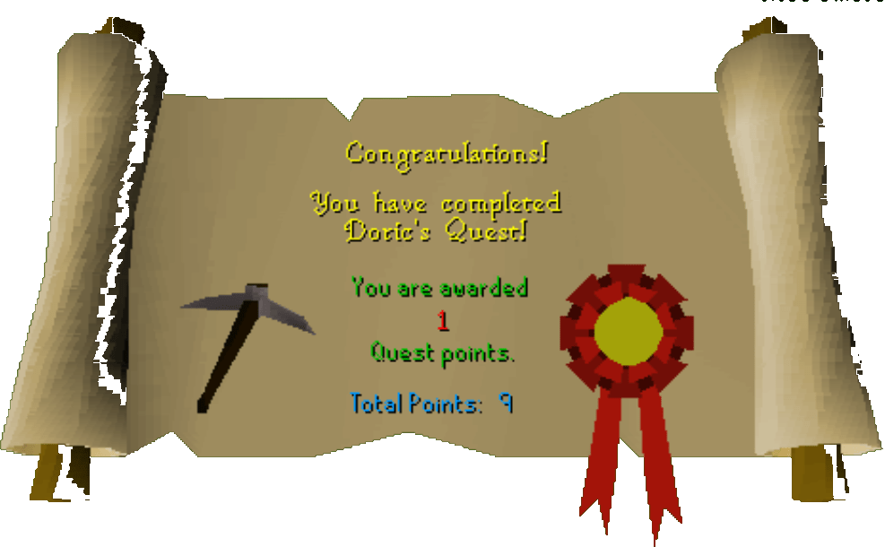

Doric's Quest
Description: Doric the dwarf is happy to let you use his anvils but first he would like you to run an errand for him.Difficulty: Novice
Length: Short
Items & Skills Needed:
Recommended:
- 15 Mining
Reward: 1 Quest point, 1,300 Mining XP, 180 coins, permission to use Doric's anvils
Instructions:
First, talk to Doric, who is located northwest of Falador. He'll tell you that to use his anvils, he needs 6 Clay, 4 Copper ore, and 2 Iron ore.
If you already have a pickaxe, skip this step. If you don't, walk over to Barbarian Village. In one of the buildings, you'll find a Bronze pickaxe on a table. Pick it up.
With your pickaxe in hand, head to the northern entrance of the Dwarven Mines, which is located northeast of Falador.
Once there, go down the trapdoor and head south until you see some iron and copper rocks. Mine 2 Iron ore and 4 Copper ore from them. Then go a little farther south to find some clay rocks, and mine 6 Clay.
Now that you have 6 Clay, 4 Copper ore, and 2 Iron ore in your inventory, return to Doric and give him the ores. He'll appreciate it very much and reward you with 1 Quest Point, 180 coins, and 1,300 Mining XP.
Congratulations! You've just completed Doric's Quest and can now use his anvils.
Congratulations, Quest Complete!

This quest guide was written on RuneHQ by Stormer and Ghou Lies. Thanks to Nitr021, Weezy, and Pirate Bob49 for corrections.
This quest guide was entered into the database on Mon, Feb 16, 2004, at 03:38:33 PM by Chownuggs and CJH and was last updated on Sat, Feb 05, 2005, at 06:26:44 AM by nitro21.